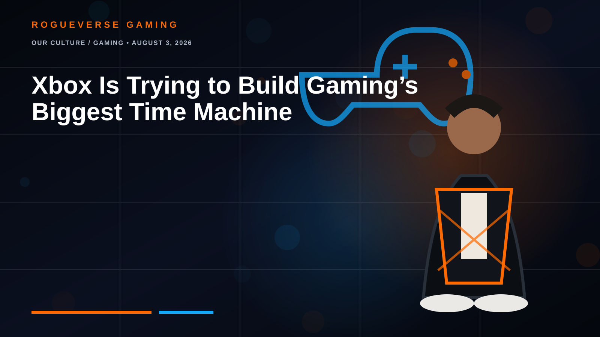
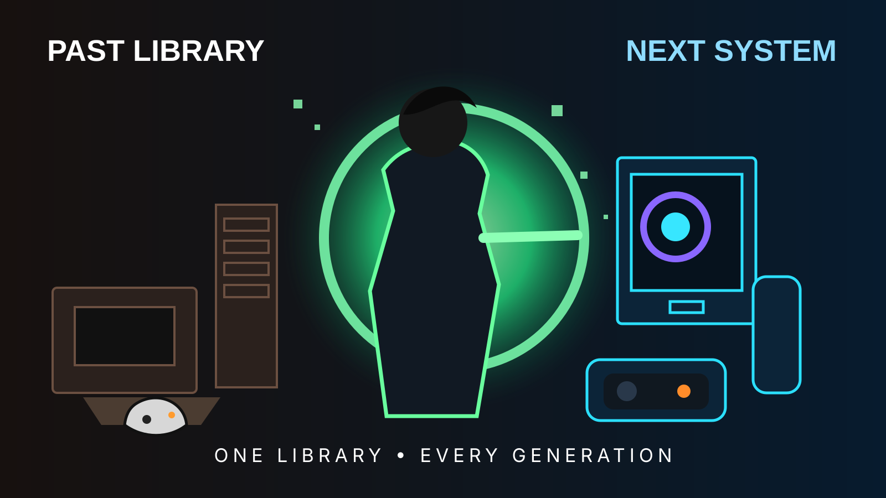

OUR CULTURE / GAMING • AUGUST 3, 2026
Xbox Is Trying to Build Gaming’s Biggest Time Machine
A reported Microsoft program could bring selected Xbox 360 games to PC, handhelds and the next-generation Project Helix platform.


Microsoft may be preparing to unlock one of the most important libraries in modern gaming.
According to a leaked developer document reviewed by The Verge, Microsoft is developing a program that would let participating publishers bring selected Xbox 360 games to PC. The same releases would reportedly work across Xbox-branded computers, supported handheld devices and Microsoft’s next-generation Project Helix hardware.
Microsoft has not formally announced the complete program, so this should be treated as a credible report rather than a guaranteed final product. The reported rollout is planned for 2027 through 2028, with developers controlling participation, pricing and Game Pass availability.
Why PC changes the equation
Backward compatibility has kept hundreds of original Xbox and Xbox 360 games alive on newer Xbox consoles. Moving that effort onto PC would be a much larger technical and commercial shift. Microsoft would need dependable controller support, cloud saves, achievement integration, licensing rules and a compatibility layer that can survive wildly different computer configurations.
If it works, Xbox could evolve from a console library into a portable archive. The same catalog could follow players from a living-room machine to a desktop, laptop or handheld.
The handheld opportunity
Older games are ideal portable companions. They usually require less processing power and storage than modern blockbusters, while offering complete adventures without live-service obligations. A handheld filled with seventh-generation RPGs, racers, fighters and cult classics could give Project Helix a clearer identity than hardware specifications alone.
Will players have to buy everything again?
The most important unanswered question is ownership. The report says publishers would control pricing, but it does not establish that a digitally owned Xbox 360 game would automatically unlock its PC edition. Some titles may support cross-buy, some may enter Game Pass and others may require a new purchase.
That policy will determine whether players view the initiative as preservation or another opportunity to sell them the same library again.
Disc-to-digital is a separate plan
Microsoft is also reportedly developing a disc-to-digital system for supported Xbox One and Xbox Series discs. The current report does not say that Xbox 360 discs will convert into PC licenses. Keeping those projects separate is important: one concerns publishers rereleasing selected older games, while the other concerns modern physical discs and transferable digital licenses.
RogueVerse verdict
Bringing Xbox 360 games to PC could become one of Microsoft’s smartest gaming moves in years. It could strengthen game preservation, give handheld players a deep catalog and make Project Helix feel like one library that survives every generation.
The danger is that expired licenses, inconsistent publisher support and repurchase requirements could reduce the dream to a smaller commercial rerelease program. The technology may impress players. The ownership rules will decide whether they trust it.